This year-long project involved the design, manufacture and testing of a desktop volumetric 3D printer based on Computed Axial Lithography (CAL). Unlike conventional layer-by-layer additive manufacturing, CAL uses a sequence of computed light projections to simultaneously cure a three-dimensional geometry within a rotating volume of photosensitive resin. The project brought together optomechanics, resin formulation, mechanical design, mechatronics and software to develop a complete STL-to-print system.
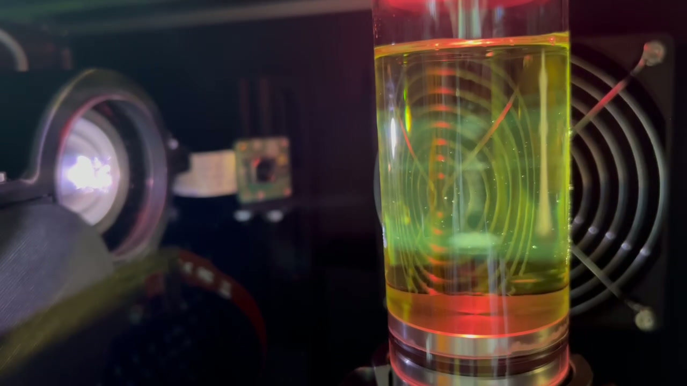
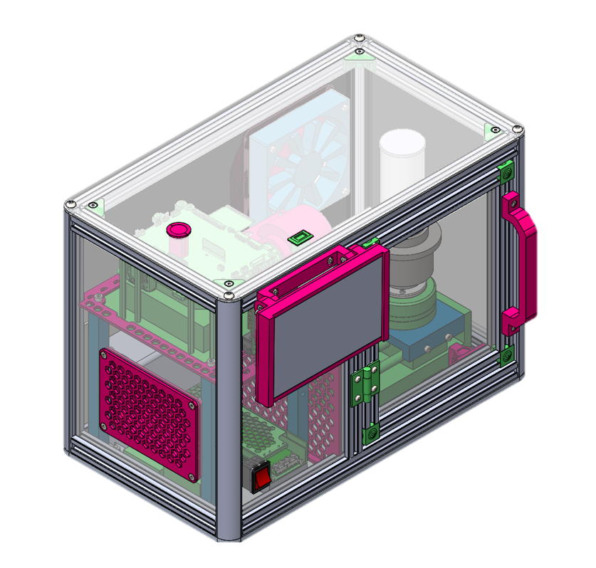
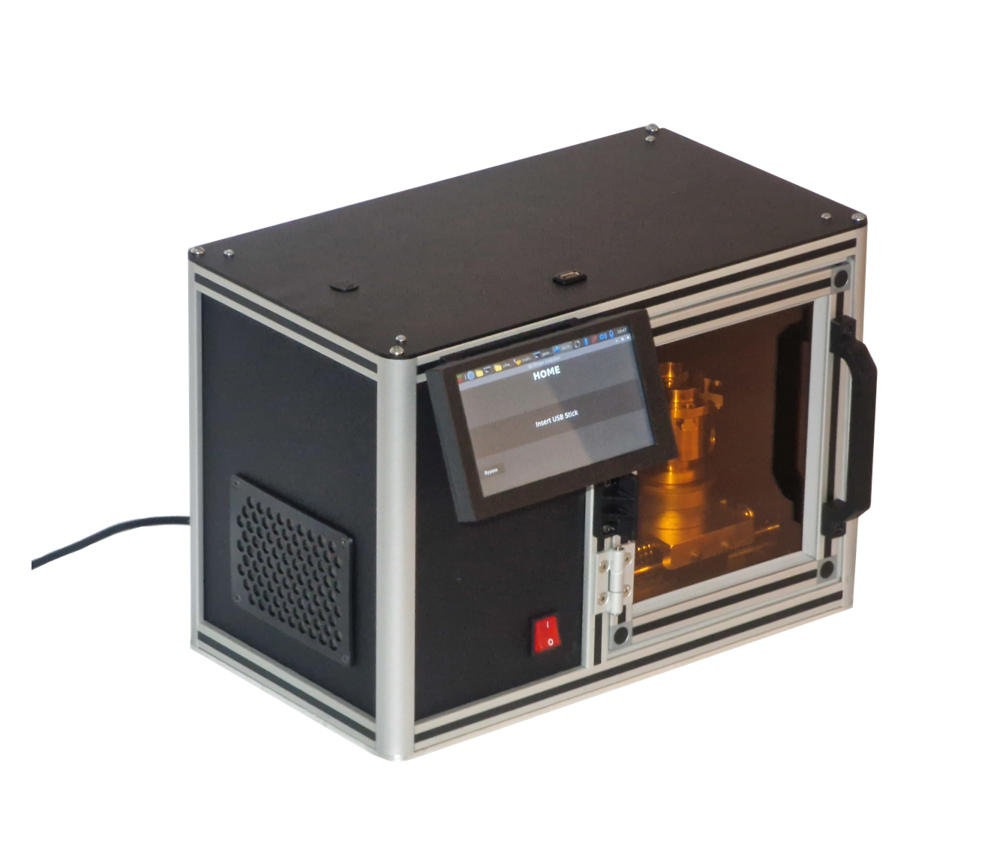
Background
Computed Axial Lithography (CAL) is a volumetric additive manufacturing technique that differs from conventional 3D printing by forming an object simultaneously rather than layer by layer. A sequence of two-dimensional light patterns is projected into a rotating volume of photosensitive resin, with each projection contributing to the accumulated light dose within the resin. Where this dose exceeds the curing threshold, the resin solidifies to form the desired three-dimensional geometry.
The process applies the principles of computed tomography in reverse. Rather than reconstructing a 3D object from multiple projections, the desired geometry is used to calculate the projections required to create it. This enables rapid, layerless printing and allows parts to be cured around existing components.
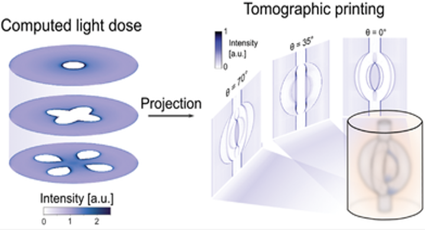
My Contribution
My technical contribution focused on the optomechanical system and photosensitive resin, taking both through experimental testing, simulation and design to manufacture, integration and final printing trials. As project manager, I coordinated the concept development, testing and integration of the overall system.
Optomechanics
The optomechanical system was responsible for delivering a focused projection across the resin vat within the dimensional constraints of the printer. Based on the available projector module, the optical configuration was investigated through physical testing and modelling, progressing from preliminary ray-tracing simulations to detailed modelling in Ansys OpticStudio. The resulting optical design was then integrated into the final system through custom-designed and manufactured components.
Optical Simulation
Preliminary ray-tracing simulations were used to investigate potential lens configurations and understand their effect on focal distance and projected image behaviour.
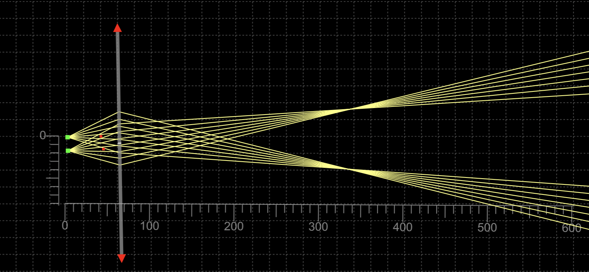
Following the preliminary investigation, a more detailed optical model was developed in Ansys OpticStudio using the projector's optical characteristics. The model was used alongside physical testing to evaluate candidate lenses and refine the optical configuration. Simulation and experimental testing led to the selection of a 250 mm focal length, 50.8 mm diameter plano-convex lens, reducing the required projection distance while maintaining the required projected image size.
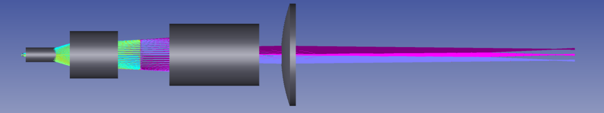
Optomechanical Design
Following selection of the final optical configuration, a custom two-part lens mount was designed to position the plano-convex lens 32 mm from the projector lens while maintaining alignment with the optical axis. The mount was manufactured in PETG, selected to accommodate the elevated temperatures around the projector during operation.
A servo-actuated shutter was incorporated into the projection system to prevent unintended resin exposure outside the printing sequence. The shutter physically blocked the optical path before projection began and returned to the closed position immediately after printing.
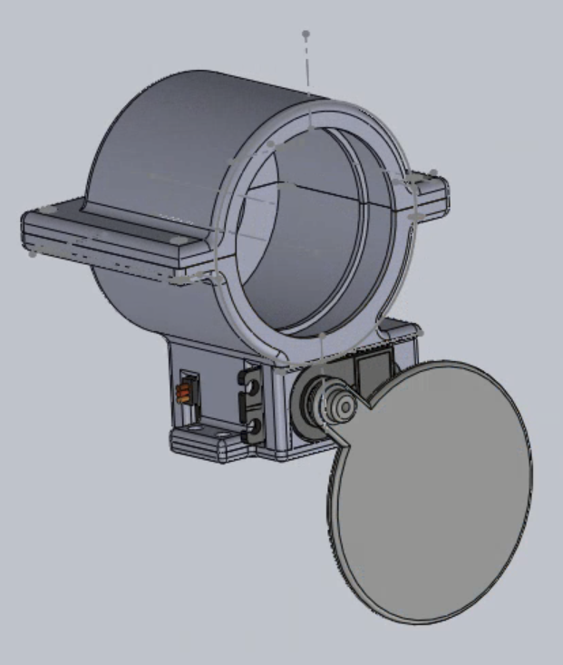
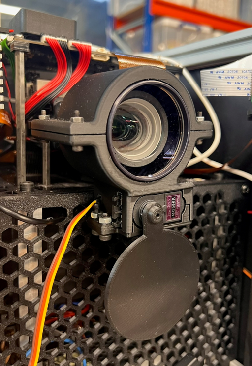
Optical Testing
Following integration of the optical system, experimental testing was conducted to characterise projection quality across the resin vat and quantify geometric distortion.
Resolution and Focus
A USAF 1951 resolution target was projected at the front, centre and back of the resin vat to assess image quality throughout the printing volume. Resolution was highest at the centre plane, with changes in focus and magnification observed towards the front and back of the vat.
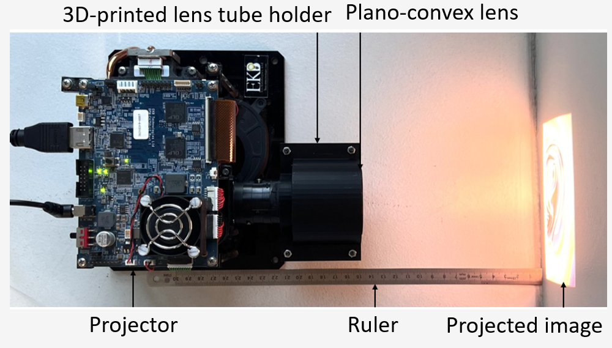
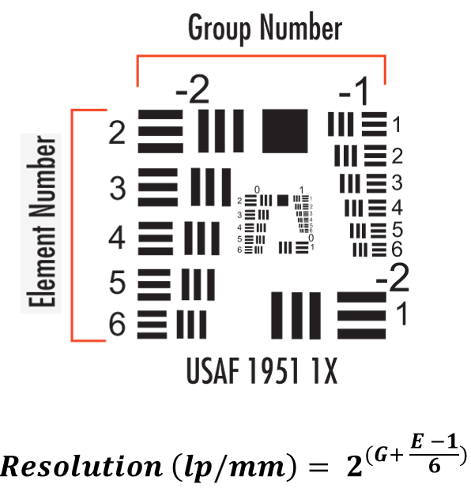
Distortion Characterisation & Correction
Grid projection tests identified barrel distortion within the optical system, with an initial measured TV distortion of −7.94% compared with −2.96% predicted through optical modelling. A Python-based image predistortion algorithm was developed to compensate for the measured deformation prior to projection.
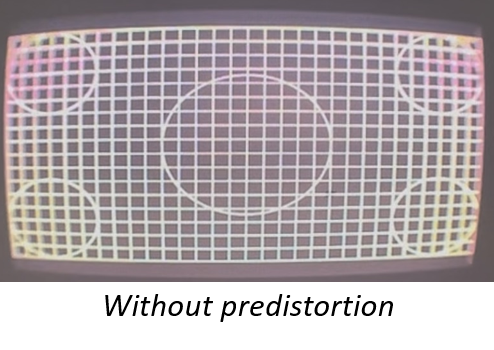
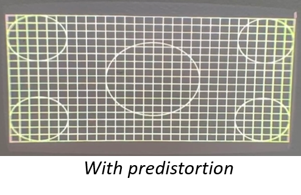
Photosensitive Resin
The resin formulation had to remain sufficiently transparent for light to penetrate the printing volume while providing a controlled curing response at the projector wavelength. Resin development therefore involved formulation, optical characterisation and experimental curing trials to establish a composition suitable for volumetric printing.
Resin Formulation & Characterisation
A photosensitive resin was developed using BPAGDA and PEGDA in a 3:1 ratio, with camphorquinone (CQ) and ethyl 4-dimethylaminobenzoate (E4DB) forming the visible-light photoinitiator system. The formulation was designed around the projector's 455 nm blue-light source.
UV-Vis spectroscopy was used to characterise the optical behaviour of the resin and investigate the effect of photoinitiator concentration on light absorption and penetration through the printing volume.
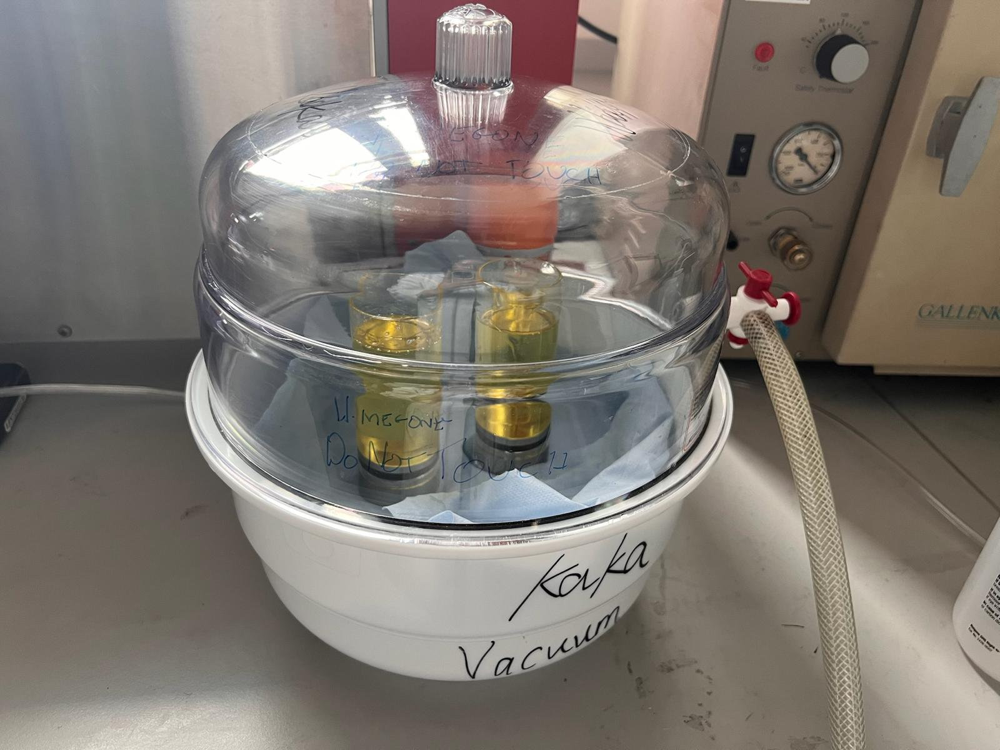
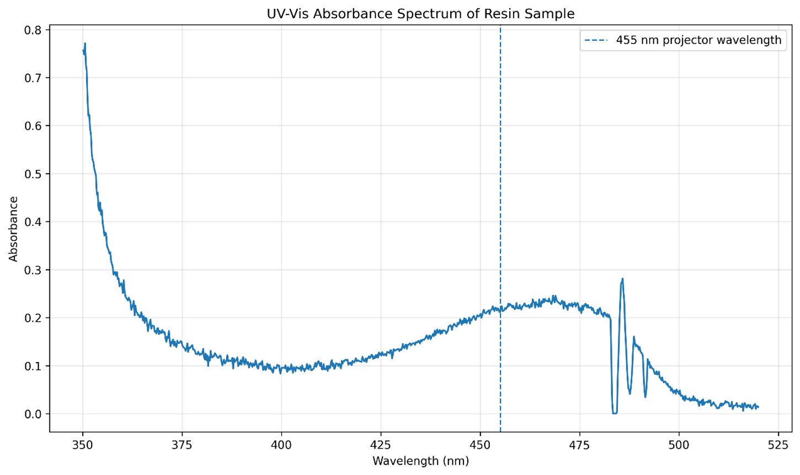
Curing and Printing Trials
Candidate resin formulations were evaluated through controlled curing tests and iterative printing trials. Early tests were used to investigate curing behaviour and refine the resin composition and exposure conditions, progressing from uncontrolled polymerisation to increasingly well-defined geometries.
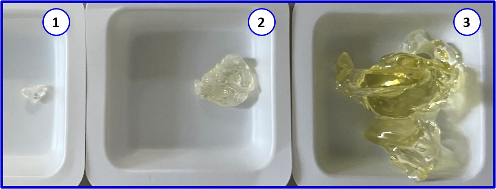
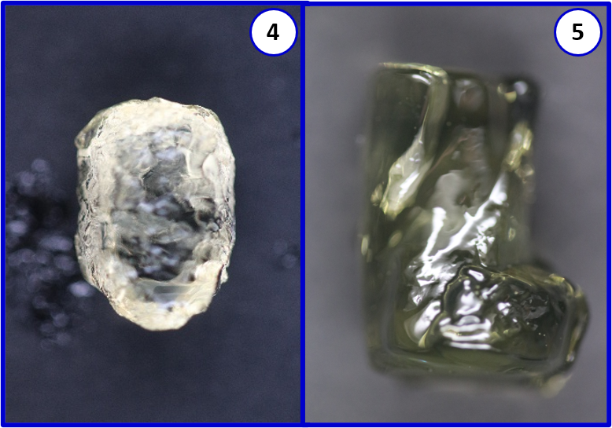
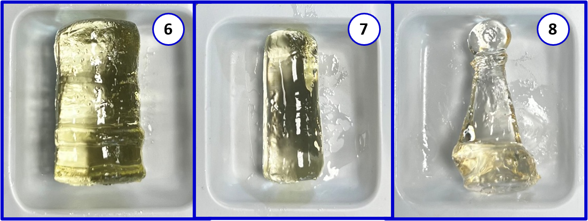
Final Results
Integration of the optical, resin, rotation, projection and control systems resulted in a functional desktop volumetric 3D printer capable of completing the full workflow from STL input to physical print. Final testing successfully produced axisymmetric geometries, demonstrating volumetric curing within the rotating resin vat.
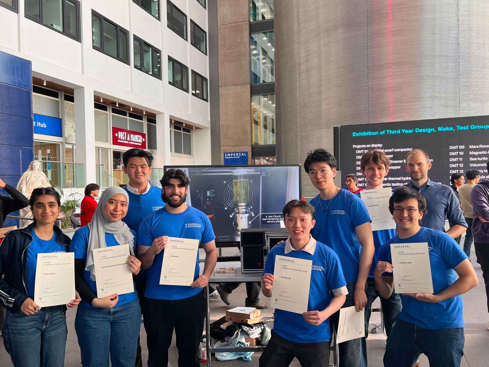
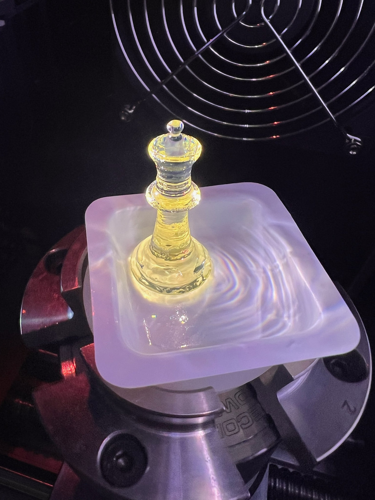